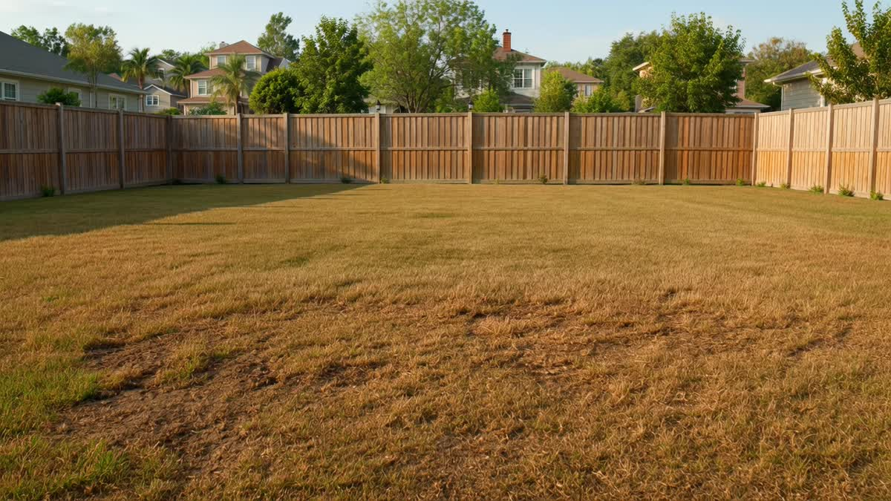
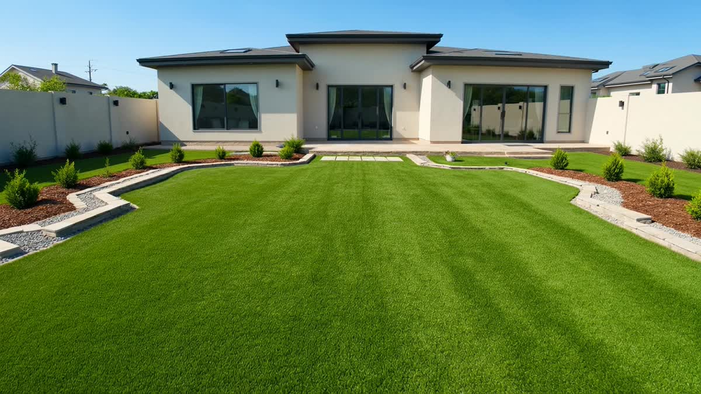
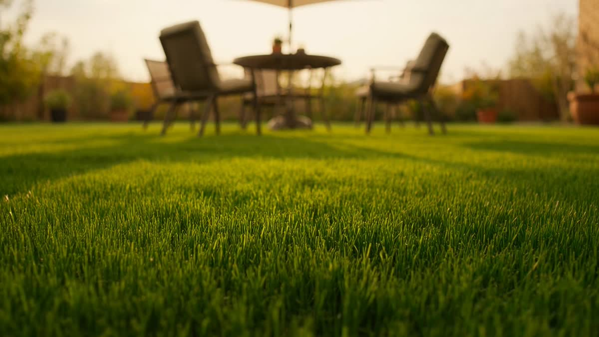

See the Difference
Drag to Reveal Before & After
Slide across a real turf transformation — then see more of our work.

 BeforeAfter
BeforeAfter ↔
Premium artificial turf and artificial grass installation for Elk Grove homes — front yards, backyards, pet turf, synthetic grass, and fake grass solutions built for year-round curb appeal.
From clean borders and drainage to turf tone, blade height, pet-use needs, and outdoor entertaining flow, every install is planned to complement your property.
Built for California sun, water-conscious homeowners, and outdoor spaces that need to look polished every day.
Slash your water bill and drop the cost of mowing, fertilizer, and reseeding — season after season.
No mowing, edging, or watering. Your lawn looks freshly cut every single day with zero effort.
Soft, non-toxic, and fast-draining. No mud inside, no pesticides — just a clean, safe surface.
Enjoy a green lawn with no daily watering, no muddy patches, and less yard maintenance.
Enjoy a beautiful green lawn year-round without mowing, watering, or seasonal upkeep.
Skip mowing, reduce watering, and keep your outdoor space easier to maintain.
Looking for turf installation near you? Green Landscaping focuses on premium artificial turf services for Elk Grove homeowners.
Premium turf installation for front yards, backyards and outdoor living spaces.
Learn MoreRealistic synthetic grass with clean edges, natural tone and low maintenance.
Learn MoreDog-friendly turf built for drainage, rinsing, pet use and less mud indoors.
Learn MoreNo-mow fake grass lawns for year-round curb appeal and easier yard care.
Learn MoreArtificial turf for curb appeal, clean walkways and polished front lawns.
Learn MoreLow-maintenance turf for family yards, patios, pets and entertaining spaces.
Learn MoreHome-focused artificial grass installation for everyday outdoor living.
Learn MoreNo reseeding. No waiting for a season. Just a flawless green lawn — the same week we install.
Premium front lawns, backyards, pet areas, and clean-edged entertaining spaces installed with craftsman-level detail.

Front and back yards transformed into lush, always-green turf with clean edges and zero maintenance.
Learn More
Durable, odor-resistant turf with superior drainage — built for dogs. No more mud, no dead patches.
Learn MoreSlide across a real turf transformation — then see more of our work.

BeforeAfter Multi-tone blades, realistic thatch, and proper base prep separate a lawn that looks fake from one your neighbors won't believe.
Designed for curb appeal, daily family life, pets, and water-conscious Sacramento homeowners.
Real reviews from real Green Landscaping customers.
"Absolutely love the work done by Green Landscaping! Jose and his crew were great to work with and I highly recommend them. Have already passed his contact info to a couple friends and neighbors."
"This is our second time working with Green Landscaping. The backyard looks so beautiful thanks to Jose and his team."
"I'm obsessed with my front yard right now. Jose and team executed our project to perfection — they were very quick and professional."
We use premium, artificial grass installed with careful workmanship, proper base prep, clean seams, and crisp edges.
Friendly advice, fast scheduling, and an honest quote. Call now and tell us about your space.
📞 Call Now (916) 849-4844Pricing depends on project size, access, drainage requirements and turf selection. We provide free estimates for Elk Grove homeowners.
Yes. Pet turf is clean, durable, drains well and helps reduce muddy paws.
Artificial turf can significantly reduce outdoor water usage compared with natural grass.
Local Elk Grove expertise, C-27 #1059991, premium installations and a focus on beautiful low-maintenance lawns.